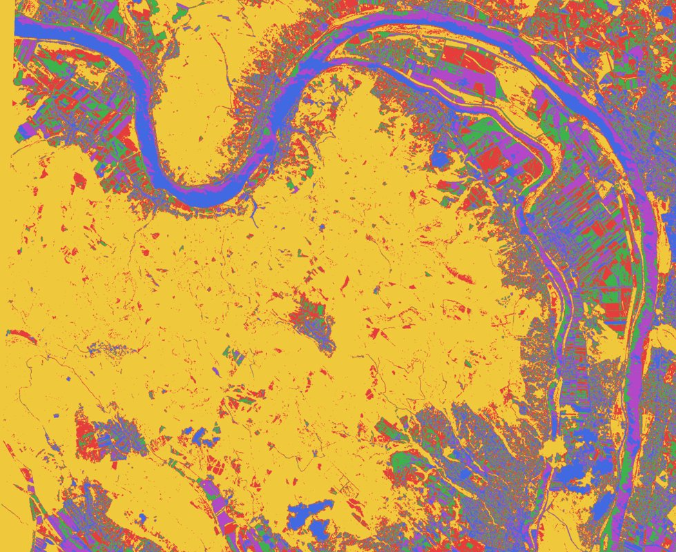
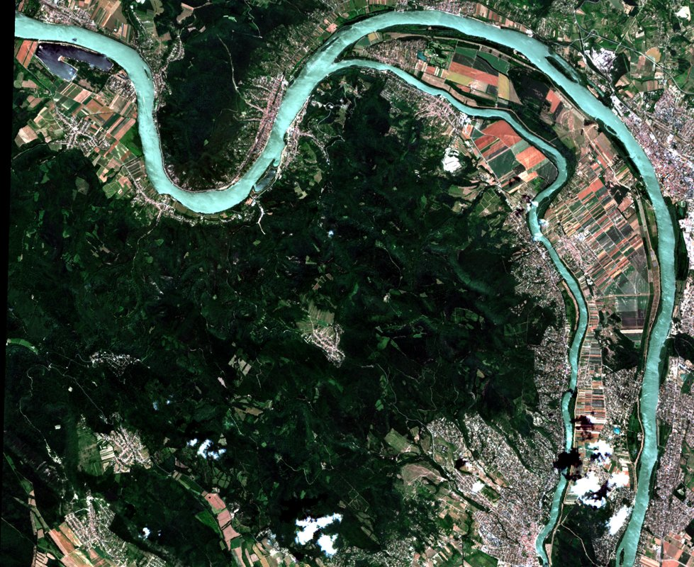

Most ezen dolgozom
Impro
Egy képfeldolgozó műhely, ahol a képeket nemcsak nézni lehet, hanem kérdéseket is feltenni nekik. Kísérletek szűréssel, osztályozással és a képi információ feltárásával.
Az Impro bemutatása

Elek István személyes műhelye
Hogyan lesz adatokból felismerés, egyszerű szabályokból összetett viselkedés, kérdésekből új gondolat?
Ezek mentén kutatok, írok és készítek programokat. Ezen az oldalon a munkáimból és a közben születő gondolatokból válogatok.
Nézz körül a műhelyben
Most ezen dolgozom
Egy képfeldolgozó műhely, ahol a képeket nemcsak nézni lehet, hanem kérdéseket is feltenni nekik. Kísérletek szűréssel, osztályozással és a képi információ feltárásával.
Az Impro bemutatása
Megjelenhet-e intelligencia egyszerű szabályokból? Egy mesterséges világ lakói energiát gyűjtenek, tapasztalatot szereznek és tudást adnak át.
A modell tere egy önmagába visszatérő, tórusz alakú világ. Az entitások energiaforrások és energianyelők között mozognak; emlékezetük és találkozásaik befolyásolják a viselkedésüket.
A kísérletek középpontjában az alkalmazkodás, a tudásátadás és az összetett viselkedés kialakulása áll.
Részletes dokumentáció (angolul):
DEM Centre Users’ Guide — felhasználói kézikönyv, 2024 (PDF) ↗
Képfeldolgozás és képi értelmezés, különös tekintettel a drónfelvételekre. Kapcsolat a látvány, az adatok és a térbeli összefüggések között.
A Giwer a raszterképek feldolgozásának és értelmezésének műhelye. A fejlesztés során szerzett tapasztalatok az új képfeldolgozó program, az Impro tervezéséhez is kiindulópontot adnak.
Tudományos ismertető:
GeoImage Workflow Editing Resources: GIWER — IntechOpen, 2023 (DOI: 10.5772/intechopen.1001297) ↗
Felhasználói kézikönyvek (2022):
Saját fejlesztésű C#-os asztali program képfeldolgozási kísérletekhez. Egy hely, ahol az algoritmusokat valódi képeken lehet kipróbálni.
Az Impro fejlesztés alatt álló műhelyprogram. A munka része többek között az RGB-képek előállítása, az NDVI, valamint a k-means osztályozás eredményeinek vizsgálata.
A fenti képpár ugyanannak a dunai területnek az RGB-megjelenítését és osztályozott változatát mutatja.
A Wella (WELl Log Analysis) mélyfúrási geofizikai szelvények feldolgozására, megjelenítésére és értelmezésére készített, nem kereskedelmi célú program.
Nyugdíjba vonulásom után, szakmai érdeklődésből fejlesztettem. A Wella nem kész petrofizikai értelmezési algoritmusok gyűjteménye: a felhasználó maga adhat meg számítási formulákat, amelyeket a program a mérési szelvények pontjain kiértékel, majd megjeleníti az eredményeket.
Az értelmezési műveletek pontonkéntiek; konvolúciós és ablakozási eljárások nem részei ennek a rendszernek. Az előfeldolgozásban néhány hasonló megoldás kísérleti jelleggel szerepel.
A Wella korlátozott funkcionalitású, kísérleti fejlesztés, nem kereskedelmi szoftver.
Felhasználói kézikönyv:
Wella Users’ Guide — angol nyelvű felhasználói kézikönyv (2025, 10 oldal, PDF) ↗
A kódon túl
Az intelligencia, az idő, az ember és a mesterséges intelligencia kapcsolata. Kutatói kérdések és személyes történetek — különböző formákban.
Szépirodalmi műveimet Elek Ignác néven publikáltam.
A Substack-oldalamon írások, folytatásos történetek és beszélgetések olvashatók.
Tovább a Substackre ↗Beszélgetések a mesterséges intelligenciával elméletekről, érzésekről és az ismeretlenről
Elek István – ChatGPT
ELTE Eötvös Kiadó
Elek István
Nova Science Publishers
Elek István
ELTE Eötvös Kiadó
Elek István
Typotex Kiadó
Elek István
ELTE Eötvös Kiadó
Elek Ignác
Magyar Elektronikus Könyvtár
Elek Ignác
Seneca Kiadó
Rólam
Fizikai tanulmányok felől érkeztem az informatikához. Oktatóként és kutatóként az ELTE Informatikai Karához kötődöm; a térbeli adatok, a képfeldolgozás és az intelligencia kialakulásának kérdései foglalkoztatnak.
Számomra a programozás a gondolkodás egyik eszköze: egy ötletből működő modellt lehet készíteni, majd megvizsgálni, mi következik belőle. Az írás és a beszélgetés ugyanezt a kíváncsiságot viszi tovább.